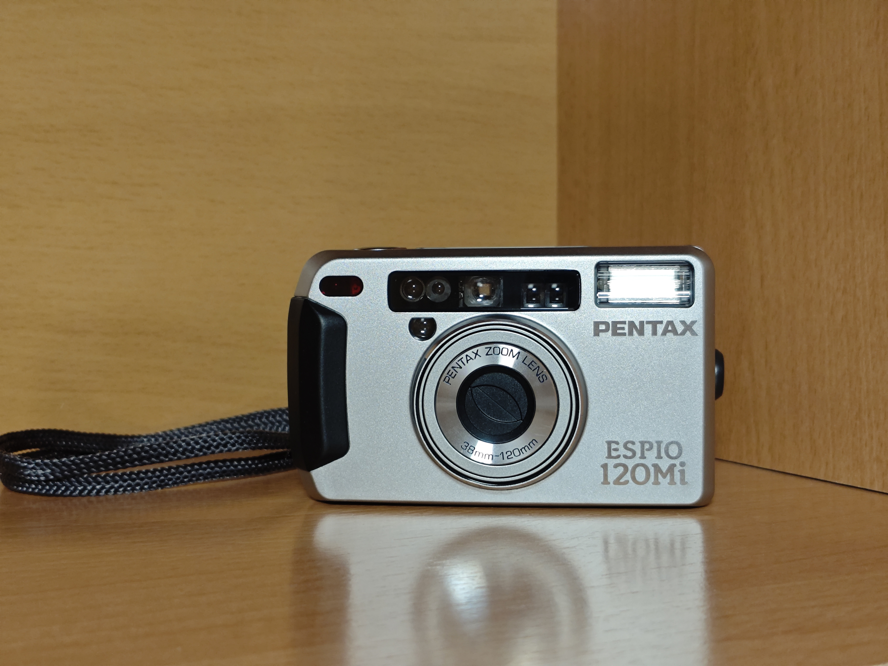

Nuestro Catálogo

Pentax Espio 120 Mi
Una compacta premium ultra pequeña con un zoom potente y gran calidad óptica.
Ver detalles
Canon Prima Tele
Cámara clásica de los 80 con doble focal fija para cambiar de angular a teleobjetivo al instante.
Ver detalles
Olympus Pen FT
Una joya réflex de medio formato, mecánica y con lentes intercambiables para hacer 72 fotos por carrete con total control creativo.
Ver detalles